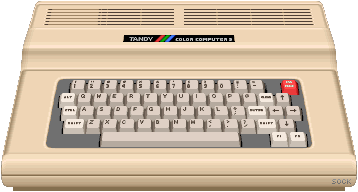

Home
Blog
Projects
Links
About
CoCo3.org
6/5/2022 4:25 AM: – Projects:
What Projects to work on?
6/5/2022 2:55 AM: – A system I want to cover sometime, and that I would like to see a FPGA implementation of, is the
KIM-1
. Check out this video
PAL-1 computer (KIM-1 replica)
of
The Taylor and Amy Show
who built the
PAL-1
computer, a
KIM-1
replica.
6/4/2022 8:40 PM: – Blog:
Is FPGA Emulation?
6/1/2022 4:46 PM: – Blog:
FPGA's: what are they?
(Hint: they are NOT software)
6/1/2022 4:39 PM: – Another really nifty simulator is this one:
Electronic Circuit Simulator
This one does both analog and digital. Superb tool for learning.
6/1/2022 4:36 AM: – To understand and learn FPGA programming you need to become familiar w/ digital logic design. This software is a really good learning and design tool.
Digital logic design tool and simulator
5/30/2022 11:02 PM: – I’ve been following this site
Mister Retro Wolf
. If you’re interested in learning how to go about recreating a retro system in FPGA then this guy really shows us how to go about it. It’s absolutely fascinating and he is doing a great job of it. I too want to create a
MiSTer
core down the road. Perhaps the SWTPC, if no one beats me to it. I would like to help improve the
MC-10
,
CoCo2
and
CoCo3
cores as well.
5/30/2022 8:00 PM: – I enjoyed watching these. I would have loved to own one these back in the day before I got my first CoCo. I would've learned so much and done way better w/ the CoCo when I got it. I like the way he mixes old tech w/ new tech. It goes along w/ the spirit of what I have in mind for this site. What might be cool is to create a virtual ETA-3400 using FPGA as an exercise to learn FPGA.
Heathkit ET-3400 Part 1: Designing and building an ETA-3400 Memory/IO Accessory
Heathkit ET-3400 Part 2: ET-3400 vs ET-3400-A, Cassette Interface, ADC Experiment
Heathkit ET-3400 Part 3: The ET-3404 6809 adapter, cloned
5/30/2022 6:15 PM: – Added the
Blog
and
Projects
pages.
5/29/2022 9:46 PM: – Added a
Links
page.
5/28/2022 2:41 AM: – This is so awesome:
Sprites Animation Graphics & Video Games
on a CoCo1/2. Check it out!!
5/28/2022 2:29 AM: – This is a really cool project:
8bitworkshop.com
. It would be awesome if CoCo’s 1/2 & 3 were added to it. I would love to do an installable offline version of this written in C# (or Java). The HDL / Verilog emulation w/ emulated video is really cool.
5/26/2022 4:47 AM: – Site launch:
About
.